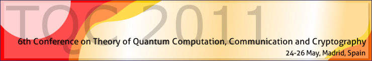

TQC 2011 Conference Program (pdf)
TQC 2011 Book of abstracts (pdf)
| 8:00-9:20 | Registration |
| 9:20-9:30 | Welcoming addresses |
| 9:30-12:30 | Morning session: Quantum Cryptography I |
| 9:30-10:30 | Nicolas Gisin (invited talk) Futures of Quantum Communication: Device-Independent QKD, Quantum Networks and bi-locality |
| 10:30-11:00 | Jonathan Silman, Andre Chailloux, Nati Aharon, Iordanis Kerenidis, Stefano Pironio and Serge Massar Mistrustful quantum cryptography in a device-independent setting |
| 11:00-11:30 | Break |
| 11:30-12:00 | Marco Tomamichel, Charles Ci Wen Lim, Renato Renner, Nicolas Gisin Towards a tight finite key analysis for BB84 |
| 12:00-12:30 | Lluis Masanes, Stefano Pironio and Antonio Acin Secure device-independent quantum key distribution with causally independent measurement devices |
| 12:30-14:00 | Lunch |
| 14:00-17:00 | Afternoon session: Quantum Information I |
| 14:00-15:00 | Héctor Bombín (invited talk) Structure of 2D Topological Stabilizer Codes |
| 15:00-15:30 | Frederic Dupuis, Jan Florjanczyk, Patrick Hayden and Debbie Leung The locking-decoding frontier for generic dynamics |
| 15:30-16:00 | Break |
| 16:00-16:30 | Koenraad Audenaert Telescopic relative entropy |
| 16:30-17:00 | Iman Marvian and Robert Spekkens A generalization of Noether's theory and the information-theoretic approach to the study of symmetric dynamics |
| 17:00-18:00 | Rump session |
| 9:30-12:30 | Morning session: Quantum Algorithms I |
| 9:30-10:30 | Umesh Vazirani (invited talk) Quantum Hamiltonian Complexity |
| 10:30-11:00 | Gorjan Alagic and Stephen Jordan Approximating the Turaev-Viro invariant of mapping tori is complete for one clean qubit |
| 11:00-11:30 | Break |
| 11:30-12:00 | Ben Reichardt Span-program-based quantum algorithm for evaluating unbalanced formulas |
| 12:00-12:30 | Matthew McKague Self-testing graph states |
| 12:30-14:00 | Lunch |
| 14:00-17:00 | Afternoon session: Quantum Cryptography II |
| 14:00-15:00 | Mio Murao (invited talk) "Globalness" of unitary operations on quantum information |
| 15:00-15:30 | Daniel Cavalcanti, Nicolas Brunner, Paul Skrzypczyk, Alejo Salles and Valerio Scarani Large violation of Bell inequalities using both particle and wave measurements |
| 15:30-16:00 | Break |
| 16:00-16:30 | Lawrence Ioannou and Michele Mosca Unconditionally-secure and reusable public-key authentication |
| 16:30-17:00 | Anthony Leverrier and Philippe Grangier Long distance quantum key distribution with continuous variables |
| 17:00-19:30 | Poster session |
| 9:30-12:30 | Morning session: Quantum Algorithms II |
| 9:30-10:30 | Hans Briegel (invited talk) Projected simulation for artificial intelligence |
| 10:30-11:00 | David Meyer and James Pommersheim Multi-query quantum sums |
| 11:00-11:30 | Break |
| 11:30-12:00 | Juerg Wullschleger Bitwise quantum min-entropy sampling and new lower bounds for random access codes |
| 12:00-12:30 | Mehdi Mhalla, Mio Murao, Simon Perdrix, Masato Someya, Peter Turner Which graph states are useful for quantum information processing? |
| 12:30-14:00 | Lunch |
| 14:00-16:30 | Afternoon session: Quantum Information II |
| 14:00-15:00 | Tobias Osborne (invited talk) The continuum limit of a quantum circuit: variational classes for quantum fields |
| 15:00-15:30 | Break |
| 15:30-16:00 | Vaibhav Madhok and Animesh Datta Quantum discord in quantum information theory - from strong subadditivity to the Mother protocol |
| 16:00-16:30 | David Lyons, Scott Walck and Curt Cenci Local unitary group stabilizers and entanglement for multiqubit symmetric states |
| 16:30-16:45 | Closing |